Leitura correta
Mercosul de frente, a leitura mais limpa do conjunto.
- Caracteres achados
- 7 de 7
- Menor confiança
- 0,59
- Saída
- revisão manual
Estudo de caso · Raphael Magalhães
Um sistema de visão computacional que encontra a placa na foto de um veículo e lê os sete caracteres. Esta página conta como ele foi construído, o que já funciona bem e o que ainda falha.
Nas 257 fotos de teste, o detector encontra 98% das placas, e 98% do que ele marca é de fato uma placa (mAP@0,5 de 0,992).
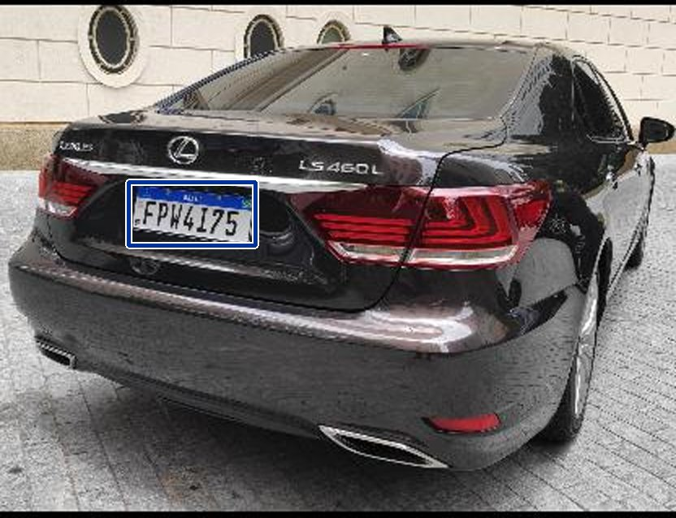
A leitura acontece em quatro etapas. Cada uma resolve um problema menor e passa o resultado adiante.
Um detector YOLO, treinado em 12.780 fotos de veículos brasileiros, marca onde está a placa.
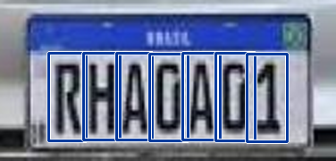
A placa é recortada com 8% de folga, e um segundo YOLO localiza cada caractere e já diz qual é (mAP@0,5 de 0,930 em 36 imagens de teste).
Na placa Mercosul, cada posição só aceita letra (L) ou dígito (D). Um 0 lido onde deveria haver letra vira O, e um I onde deveria haver número vira 1.
Se faltar caractere ou a confiança for baixa, o sistema não arrisca: devolve revisão manual.
6 acertos e 2 erros, escolhidos para ilustrar. Os números completos, das 30 placas avaliadas, estão nas seções seguintes.
Leitura correta
Mercosul de frente, a leitura mais limpa do conjunto.
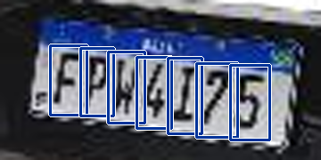
Leitura correta
Mercosul em ângulo; uma das placas que o sistema libera sem revisão.
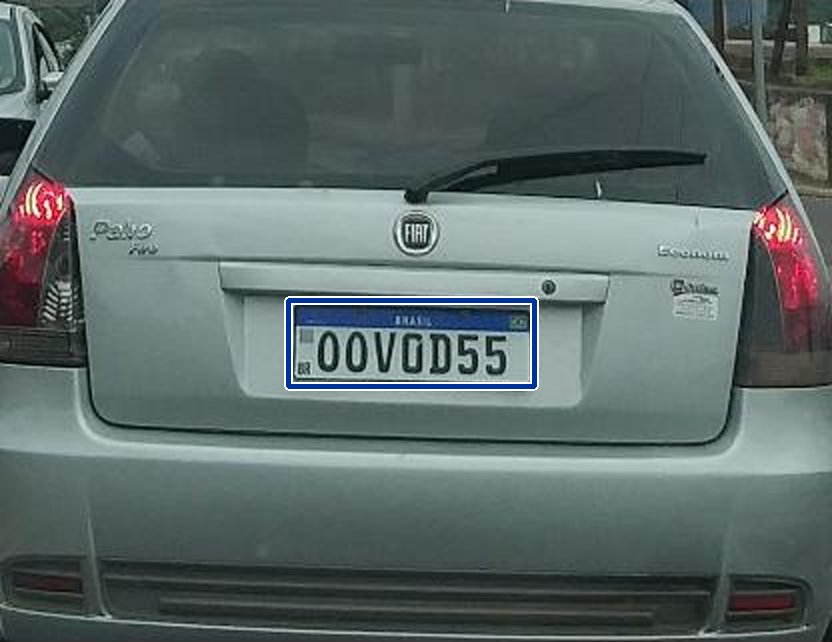
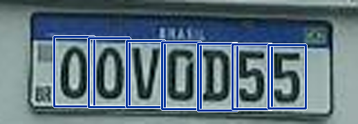
Leitura correta
Carro inteiro, placa pequena; a regra resolve O e 0.
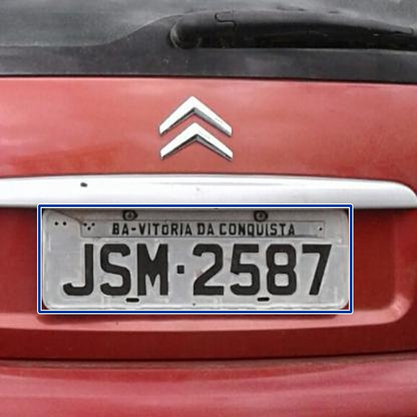
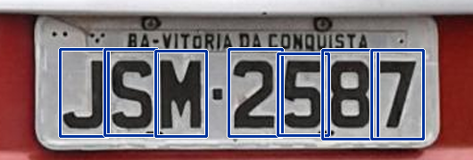
Leitura correta
Formato antigo, de perto; também liberada sem revisão.
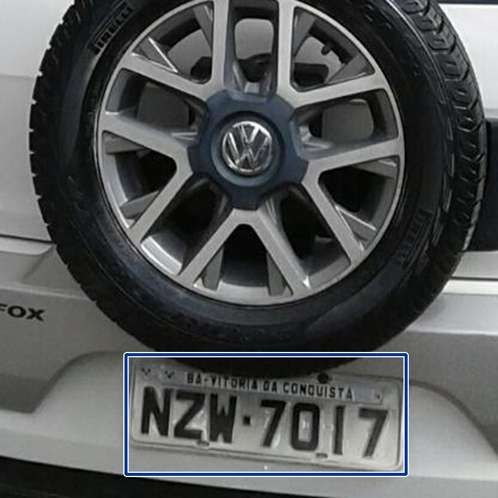
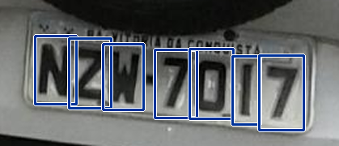
Leitura correta
Formato antigo; a regra corrige um D lido no lugar de 0.
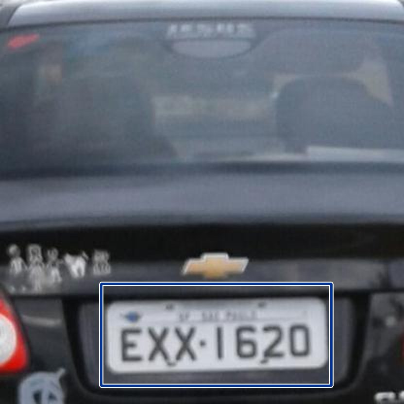
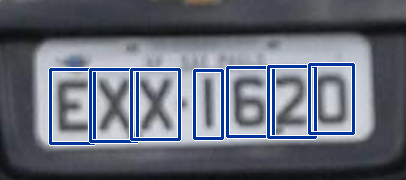
Leitura correta
Formato antigo; a regra corrige um I lido no lugar de 1.
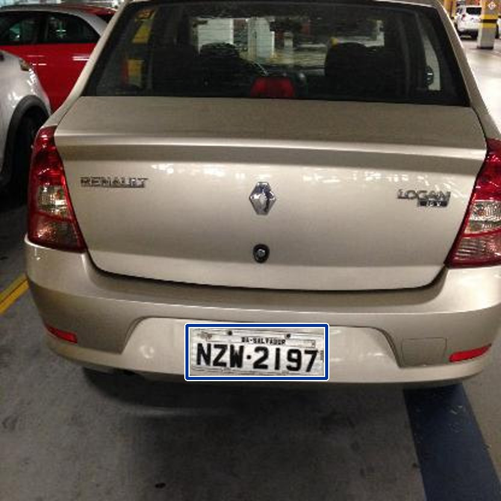
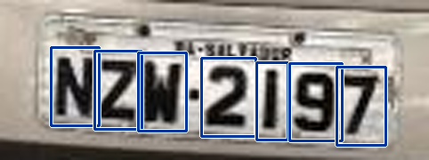
Leitura errada; o certo é NZW2197
Erro típico: um único caractere trocado, 9 lido como 5.
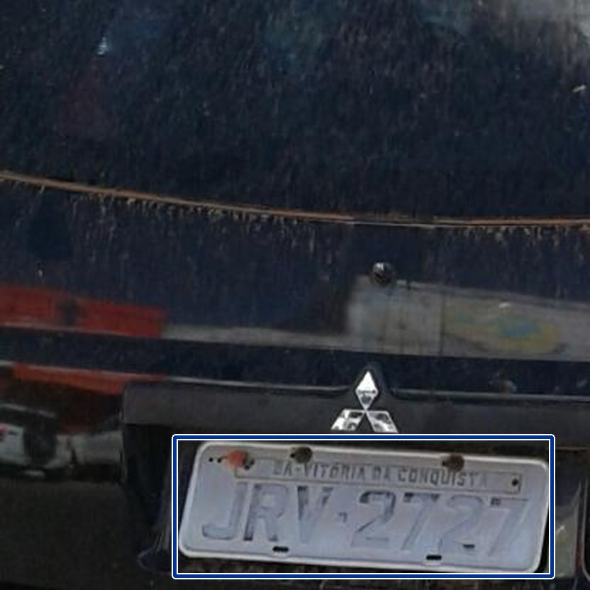
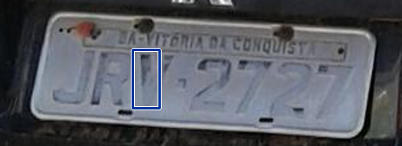
Leitura errada; o certo é JRV2727
Placa escura e borrada: o sistema acha só um caractere e pede revisão.
A primeira versão seguia o caminho clássico: binarizar a placa, separar os caracteres como manchas e classificar cada uma com uma rede convolucional (CNN). Ela leu 0,300 dos caracteres e nenhuma placa inteira.
O problema não estava na CNN. Depois da binarização, os caracteres encostam uns nos outros e na moldura, e a separação falha antes de a rede ver qualquer coisa. Para testar essa hipótese, mantive a mesma CNN e troquei só a forma de localizar os caracteres por um detector YOLO. Depois deixei o próprio YOLO dizer também qual é o caractere.
A linha vertical marca a meta do projeto, 0,95.
A linha vertical marca a meta do projeto, 0,80.
Com a mesma CNN, só trocar a localização levou os caracteres certos de 0,300 para 0,619. A rota final, em que o YOLO faz as duas coisas, ficou com 72% dos caracteres. O código manteve só essa rota.
Em quantas das 30 placas cada posição sai errada. As posições 4 e 6 são as que mais erram.
A regra do formato reduziu os erros de 80 para 59, somando todas as posições, sem nenhum treino a mais. O que sobra são trocas entre formas parecidas, como 9 e 5, e placas em que o formato (Mercosul ou antigo) foi identificado errado, o que faz a regra trocar o caractere certo pelo errado.
Hoje o sistema lê corretamente 10 de 30 placas (0,333) e 0,719 dos caracteres. As metas do projeto eram 0,80 e 0,95, e ainda não foram atingidas.
Três cuidados ao ler esses números. Com 30 placas, cada uma vale 3,3 pontos de acurácia, então a medida ainda é grosseira. As placas foram escolhidas entre as maiores e mais legíveis, e não representam fotos noturnas ou placas muito pequenas. E o gabarito foi transcrito à mão, sem usar a regra do formato, para não inflar o resultado.
O sistema já sabe quando não sabe. Com o limiar de confiança em 0,70, nenhum dos 20 erros sairia como resposta final: todos iriam para revisão manual. O custo é que só 2 dos 10 acertos são liberados. O limiar está conservador demais.
A placa pode identificar uma pessoa de forma indireta. Este é um projeto acadêmico, sem finalidade de vigilância. Ele usa só bases públicas, nenhuma foto foi tirada por mim, e o sistema devolve apenas o texto da placa: não consulta, guarda nem cruza dados sobre dono, veículo ou local.
Com a acurácia atual, ele não deve ser usado para decisões automáticas sobre pessoas.
Sou Raphael Magalhães e faço pós-graduação em IA Generativa e LLM. Este projeto nasceu como trabalho final da disciplina de Processamento e Análise de Imagens e continua em evolução.